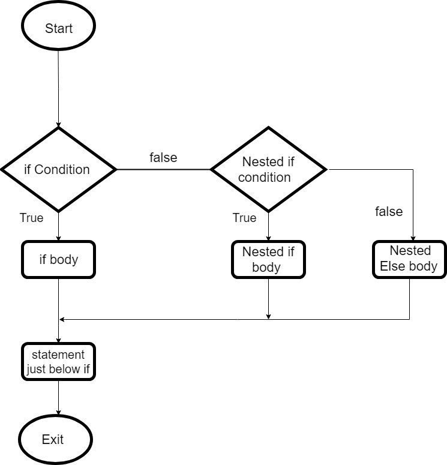

It is always legal in C programming to nest if-else statements, which means you can use one if or else if statement inside another if or else if statement(s).
Syntax
The syntax for a nested if statement is as follows −
if( boolean_expression 1) {
/* Executes when the boolean expression 1 is true */
if(boolean_expression 2) {
/* Executes when the boolean expression 2 is true */
}
}
You can nest else if...else in the similar way as you have nested if statements.
Flow Chart

Example
#include
int main () {
/* local variable definition */
int a = 100;
int b = 200;
/* check the boolean condition */
if( a == 100 ) {
/* if condition is true then check the following */
if( b == 200 ) {
/* if condition is true then print the following */
printf("Value of a is 100 and b is 200\n" );
}
}
printf("Exact value of a is : %d\n", a );
printf("Exact value of b is : %d\n", b );
return 0;
}
When the above code is compiled and executed, it produces the following result −
Value of a is 100 and b is 200
Exact value of a is : 100
Exact value of b is : 200